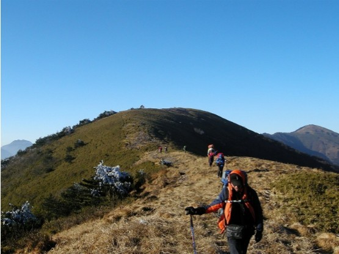
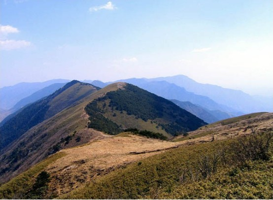
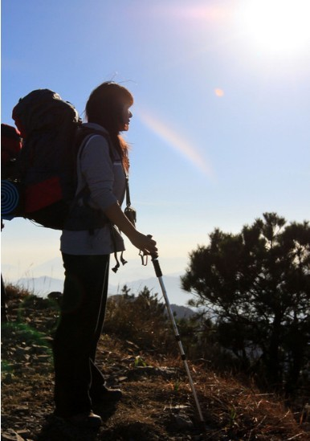

发信人: xiaoyemeizi (小野妹子), 信区: outdoor
标 题: 拥抱自然，穿越三尖，悠悠山川，咫尺天涯
发信站: 饮水思源 (2013年10月31日00:12:26 星期四)
【线路背景】
太子尖（海拔1558米）——百丈岭（1334米）——童公尖（1558米）穿越路线（以下简称
“三尖穿越”）位于临安西部，南起清凉峰一带，北至浙西大峡谷白马崖一带。全程路线
因都在山脊上走，故视野开阔，山两边景色尽收眼底，经常能看到云海云瀑。三尖穿越全
路段沿途攀爬的的地方不多，安全性好，虽然线路略长，仍然是一条不错的徒步穿越路线
，也被驴友们誉为华东地区最经典最美最刺激最适合野驴的经典线路。
 screen.width - 200){this.width = screen.width - 200}">
秋意秋色，悠长小径~
 screen.width - 200){this.width = screen.width - 200}">
行走山脊，感受自然
【相关信息】
活动时间：11月8日 18：30出发，10日 15：00返校~
线路强度：★★★★ （中等偏上，行走时间较长，累积徒步时间需要约15 h，）
线路难度：★★★ （中等，大约路况为山脊行走，路径清楚，但遇雨天，难度大大增加
）
风景指数：★★★★ （赞！穿梭在山脊之间，两边美景尽收眼底）
费用：总计：会员：270元/人 非会员：300元/人（多退少补）
明细：营地费用：10元/人
下山腐败：40元/人
装备费用：50元/人（帐篷￥20，背包￥15，防潮垫加睡袋￥10，气罐加炉头￥5。自己有
装备可退个人装备部分）
户外险： 10元/人
车费： 150元/人
向导费： 10元/人
【成员组成】
成员总人数：33人（包括领队等）
领队： 石鑫栋 （15721281772）
副领队：徐向飞 （13816998856)
压队： 何敏 （15026564169）
【具体行程安排】
上海——马啸——太子尖山腰——太子尖——上马啸岭——中马啸岭——花石岩——下马
啸岭——避风岭——百丈岭——大牛屎——花岩石（雷达站废墟）——童公尖——浮桥村
——上海
活动行程计划：
第一天（11月8日 周五）
17:45 庙门集合（包车前往，车上做自我介绍及破冰游戏，补充睡眠）
00:00 到达山腰，搭帐篷，睡觉
第二天（11月9日 周六）
6:30 起床；
7:30 开始上山；
9:00 到达太子尖，修整一会后，接着是一段长距离山脊；
12:00 到花石岩，吃午饭；
17:30 到百丈岭营地，扎营，吃晚饭, 游戏聊天；
当天徒步行程约18公里。
第三天（11月10日 周日）
6:00 起床；
7:00 开始向童公尖出发；
8:00 到达大牛屎(1598米)，天气好可以看到黄山顶峰；
10:30 登顶童公尖（1558米），第三尖完成；
13:40 到达山脚，腐败进餐；
15:00 包车返校；
19:30 到校。
当天徒步行程约12公里。
 screen.width - 200){this.width = screen.width - 200}">
有什么可犹豫的，行诸山野，立命天地！和野协一起度过不一样的周末吧！！
【报名信息】
发送【三尖报名+姓名+年级+会员/非会员/干事】至【13816998856】（徐同学）
名额有限，报名从速。对此次活动有任何疑问请咨询石同学（15721281772）
报名截止时间：11月2日24点。
P.S.
1.报名截止时间可能会视报名情况提前，我们会从男女比例、出行经验等方面综合考虑选
择成员，报名时间的先后顺序并非参考的唯一标准；
2. 准备会后领队不会单方面取消队员资格（不愿意签署知情同意书、购买保险、交纳活
动费者除外）。对于准备会之后要求退队的同学，若没有替代队员，活动费中车费部分不
退还。
【注意事项】
1. 以上行程为基本行程，领队有权根据天气、队员状态等情况调整活动计划，不承担由此
造成的损失和责任。
2. 野外活动不同于一般旅游，参加活动的队员须听从领队和向导的组织安排，严禁野外用
火吸烟，严禁擅自离队，所有活动安全第一，对于无视指挥所造成的后果由自己负责。
3. 无论什么时候，一旦觉得事情应付不来，就要讲出来。艰难的路段最好请人帮助，甚至
放弃不爬，也比发生危急情况要好。
4. 登山应发扬团队精神，途中留意同伴情况，危险地段互相提醒或协助通过。
5. 迷路时应折回原路，或寻找避难处静待救援；除保持体力外，并安抚队员平稳情绪。
6. 提倡环保，注意保护环境，“除了脚印，什么都不留下；除了风景，什么都不带走”，
请将垃圾带离及小心用火，切勿乱丢烟蒂，引起山火。
7. 安全第一，切忌个人英雄主义，要量力而为，集体活动以大局为重，不搞个人主义，不
得单独行动。
8. 请守时，对自己负责，对他人负责
--
Where R U，圣德太子？
※ 来源:·饮水思源 bbs.sjtu.edu.cn·[FROM: 58.196.131.8]
|